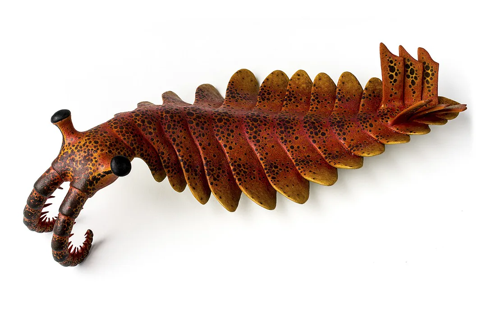

Capas con fuente de la Tierra
Lee las capas con fuente, desde hace 4.540 millones de años hasta la última glaciación. Cada dato tiene su fuente.
TODO machine-draft translation: quest copy below is English for review.
The Dig Quest tour is retired. These sourced layers stay on this page so the facts remain readable. Deep Time and the fossil map are the way through the rest of the record.
Deep Time · Fossil map · Continents · Oceans · Seas · The Dead Sea
Layer 1: Earth forms (4.54 billion years ago)

NASA/JPL-Caltech, public domain. File page

Dust and gas around the young Sun clumped into rocks, the rocks collided and merged, and Earth grew. Scientists date Earth to 4.54 billion years (less than 1% uncertainty) using lead isotopes and meteorites.
Sources:
Layer 2: The Moon is born (about 4.5 billion years ago)

NASA, public domain. File page

A Mars-size body called Theia likely struck young Earth. The debris formed the Moon. Apollo rocks show the Moon formed about 60 million years after the solar system began and was once covered by a magma ocean.
Sources:
Layer 3: First crust and water (4.4 billion years ago)

James St. John, CC BY 2.0, via Wikimedia Commons. Resized for this page. File page
_2.jpg){kind=link}
A tiny zircon crystal from the Jack Hills of Western Australia is 4.404 billion years old — the oldest known piece of Earth. Its chemistry points to continental crust and liquid water very early on.
Sources:
Layer 4: Oxygen arrives (about 2.4 billion years ago)

Glacier National Park, National Park Service, public domain. File page
.jpg){kind=link}
Tiny ocean microbes, likely ancestors of cyanobacteria, made oxygen by photosynthesis. Around 2.4 billion years ago oxygen built up in the air — the Great Oxidation Event — paving the way for complex life.
Sources:
Layer 5: Life explodes in the sea (508 million years ago)

Matteo De Stefano / MUSE, Science Museum of Trento, CC BY-SA 3.0, via Wikimedia Commons. Photo of a model. File page


Esv, CC BY-SA 3.0, via Wikimedia Commons. ShareAlike: remixes keep the same license. Resized for this page. File page

The Burgess Shale in the Canadian Rockies preserves soft-bodied sea animals from the Cambrian, 508 million years ago, recording the rapid diversification of life called the “Cambrian Explosion.” Charles Walcott collected some 65,000 specimens there for the Smithsonian.
Sources:
Layer 6: The Great Dying (about 252 million years ago)

National Park Service, public domain. File page

The end-Permian extinction was the largest in Earth’s history: about 96% of species were lost. Massive volcanic eruptions in Siberia released carbon dioxide, linked to warming and ocean acidification. Life took millions of years to recover — but it did.
Sources:
Layer 7: Asteroid and recovery (66 million years ago)

NASA/JPL-Caltech, public domain. Shuttle Radar Topography Mission. File page

An asteroid 10–20 km wide struck near today’s Yucatán, forming the Chicxulub crater. About 76% of species died out, including all dinosaurs except birds. Mammals then flourished.
Sources:
Layer 8: The last Ice Age (20,000 years ago)

NOAA, public domain. File page

At the Last Glacial Maximum, about 20,000 years ago, ice sheets covered Canada and northern Europe and sea level was about 120 meters lower. Ice cores from Greenland and Antarctica record this climate history year by year.
Sources:
You reached today. Continue the story with solutions on Saving Planets →